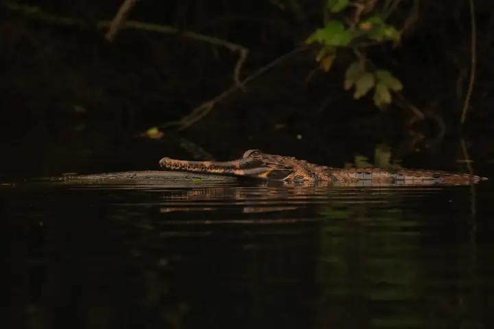
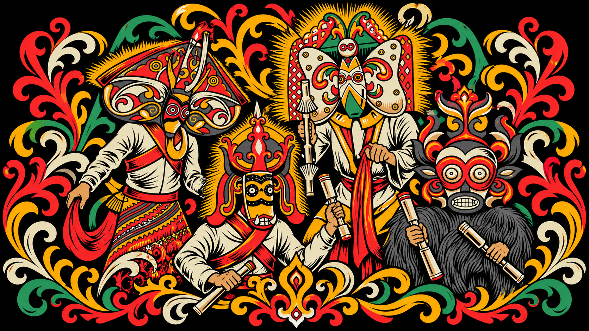
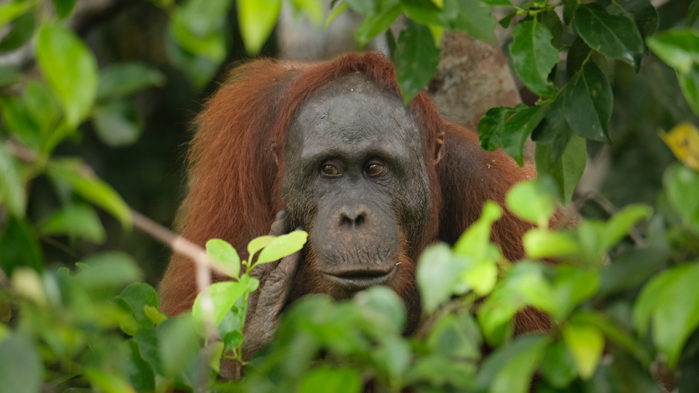

Authentic Wildlife
Meet iconic Borneo wildlife in their natural habitat.
.jpg)
Wildlife expedition in Borneo
Explore pristine rainforests, encounter extraordinary wildlife, and experience the rich culture of Kalimantan with local experts.
Meet iconic Borneo wildlife in their natural habitat.
Travel with experienced local guides and a team on the ground.
Support thoughtful encounters, local communities and conservation.
Nature, wildlife and culture in one meaningful journey.
Our expeditions
Curated journeys for nature lovers, photographers and curious travellers. Choose your pace, then let our local team help shape the details.
View all expeditions 03 days · 02 nightsEssential Escape
03 days · 02 nightsEssential Escape

04 days · 03 nightsWildlife Experience 05 days · 04 nightsWildlife Moments
05 days · 04 nightsWildlife Moments
Itineraries are sample outlines. Final routes and activities are confirmed with your trip plan and may change with park regulations, weather and river conditions.
Wildlife gallery
A glimpse of the remarkable species that call this rainforest home.
View Gallery
People · Heritage · HomePeople & culture
Beyond the rainforest, discover the people, traditions and everyday life of Lopus Village and the Dayak Tomun community.
Discover the Stories
From our home in Borneo
We are a locally rooted team, born and raised in the heart of Borneo. The rivers, forests and communities here are part of our story — and the journey we invite you to discover.
Meet our local team